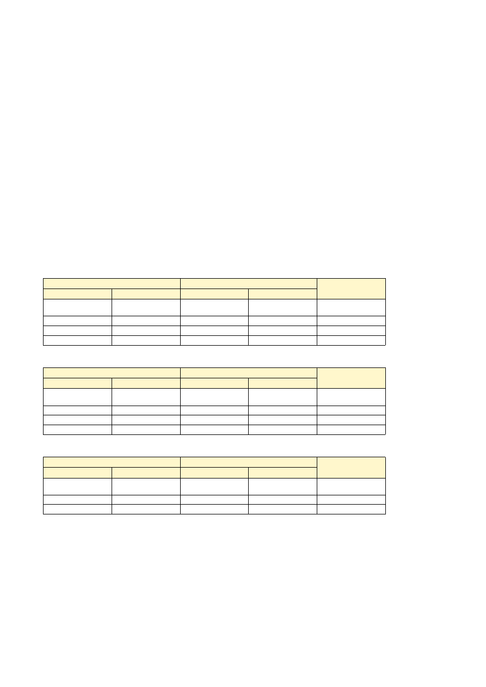

15. 예산서

[2026년 예산서 운영총칙] 1. 기본원칙 1. 회계연도의 모든 수입은 세입으로, 모든 지출은 세출로 하며, 세입과 세출은 모두 예산에 편성한다. 2. 회계연도는 2026.01.01.~2026.12.31.로 한다. 3. 입·세출 예산은 사회복지시설 재무 회계 규칙에 준하여 예산과목 구분에 따라 편성한다. 4. 예산에 변경을 가할 필요가 있을 경우 추가 경정 예산을 편성한다. 5. 예측할 수 없는 예산외의 지출 또는 예산의 초과 지출에 충당하기 위하여 예비비를 세출 예산에 계산한다. 6. 세출 예산이 정한 목적 외의 사용을 금한다. 7. 예산의 전용시 사회복지시설 재무회계 규칙 <예산의 전용> 규칙에 준한다. 8. 적립금의 적립과 사용은 특별 회계 세입·세출 예산에 계상하여 특별 회계(적립금) 예산을 편성하고, 시군구에 사전보고 후 적립 및 사용한다. 9. 세출 예산의 이월은 운영위원회 보고 후 이월한다. 2. 예산내역 1) 방문요양 세입예산 세출예산 비고 계정별 세입예산액 계정별 세출예산액 입소자(이용자) 부담금수입 16,704,504 인건비 219,475,919 요양급여수입 228,493,896 업무추진비 1,200,000 전입금 6,957,519 운영비 30,930,000 잡수입 50,000 잡지출 600,000 2) 방문간호 세입예산 세출예산 비고 계정별 세입예산액 계정별 세출예산액 입소자(이용자) 부담금수입 7,391,088 인건비 60,717,270 요양급여수입 62,989,392 업무추진비 400,000 전입금 1,796,790 운영비 11,160,000 잡수입 700,000 잡지출 600,000 3) 방문목욕 세입예산 세출예산 비고 계정별 세입예산액 계정별 세출예산액 입소자(이용자) 부담금수입 1,752,840 인건비 16,071,251 요양급여수입 12,269,880 업무추진비 1,200,000 전입금 5,198,531 운영비 1,950,000 3. 예산의 재무, 회계처리 예산의 재무, 회계 사무는 사회복지시설 정보 시스템 프로그램으로 처리하며, 사회복지 시설 재무회계 규칙에 준하여 시설 예산을 집행한다. 4. 국가 또는 지방 자치 단체로부터 교부된 보조금 및 지정 후원금, 전입금등은 추가 경정 예산의 성립 이전이라도 보조 및 후원 목적에 적절한 경우 사용할 수 있으며, 이는 차기 추가 경정 예산에 반영하여야 한다.15. 예산서
산정기간 : 2026년 1월~12월 (12개월)
| 세입 | 세출 | 잔액 |
|---|---|---|
| 252,213,103 | 252,213,103 | 0 |
| 세입 | 세출 | ||
|---|---|---|---|
| 입소자(이용자)부담금수입 | 16,704,504 | 인건비 | 219,483,103 |
| 요양급여수입 | 228,493,896 | 업무추진비 | 1,200,000 |
| 전입금 | 6,964,703 | 운영비 | 30,930,000 |
| 잡수입 | 50,000 | 잡지출 | 600,000 |
15. 예산서
[별지 제1호서식] <개정 2005.07.15> 방문요양 세입명세서
산정기간 : 2026년 1월~12월 (12개월)
| 과목 | 전년도 예산액 | 당해연도 예산액 | 증감 | 산출근거 | ||
|---|---|---|---|---|---|---|
| 관 | 항 | 목 | ||||
| 이용자부담금수입 | 이용비용수입 | 본인부담금수입 | - | 16,704,504 | 240분(1등급) 68,030 원 X 2명 X 20 일 X 12 개월 X 6% = 1,959,264 180분(2등급) 55,350 원 X 2명 X 20 일 X 12 개월 X 6% = 1,594,080 180분(3,4등급) 55,350 원 X 6명 X 20 일 X 12 개월 X 9% = 7,173,360 180분(5등급) 55,350 원 X 3명 X 20 일 X 12 개월 X 15% = 5,977,800 | |
| 요양급여수입 | 요양급여수입 | 장기요양급여수입 | - | 228,493,896 | 240분(1등급) 68,030 원 X 2명 X 20 일 X 12 개월 X 94% = 30,695,136 180분(2등급) 55,350 원 X 2명 X 20 일 X 12 개월 X 94% = 24,973,920 180분(3,4등급) 55,350 원 X 6명 X 20 일 X 12 개월 X 91% = 72,530,640 180분(3,4등급) 55,350 원 X 5명 X 20 일 X 12 개월 X 100% = 66,420,000 180분(5등급) 55,350 원 X 3명 X 20 일 X 12 개월 X 85% = 33,874,200 | |
| 전입금 | 전입금 | 기타전입금 | - | 6,964,703 | 기타전입금 6,964,703원 | |
| 잡수입 | 잡수입 | 기타잡수입 | - | 50,000 | 기타 잡수입 50,000원 | |
| 합계 | 252,213,103 | |||||
15. 예산서
[별지 제1호서식] <개정 2005.07.15> 방문요양 세출명세서
산정기간 : 2026년 1월~12월 (12개월)
| 과목 | 전년도 예산액 | 당해연도 예산액 | 증감 | 산출근거 | ||
|---|---|---|---|---|---|---|
| 관 | 항 | 목 | ||||
| 사무비 | 인건비 | 급여 (직접비) | - | 179,615,760 | 3~5등급 요양보호사 급여(주 5회 3시간씩근무, 4주) 962,180 원 X 11 명 X 12 개월 = 127,007,760 1~2등급 요양보호사 급여(주 5회 4시간씩근무, 4주) 1,096,000 원 X 4 명 X 12 개월 = 52,608,000 | |
| 퇴직금 및 퇴직적립금 (직접비) | - | 14,642,589 | 3~5등급 요양보호사 급여(주 5회 3시간씩근무, 4주) 퇴직금 및 퇴직적립금 2,886,540 원 / 92 일 X 30 일 X 11 명 = 10,353,893 1~2등급 요양보호사 급여(주 5회 4시간씩근무, 4주) 퇴직금 및 퇴직적립금 3,288,000 원 / 92 일 X 30 일 X 4 명 = 4,288,696 | |||
| 사회보험부담금(직접비) | - | 18,239,152 | 사회보험-건강보험(15명) 14,967,980 원 X 3.545% X 12 개월 = 6,367,379 사회보험-장기요양보험료(15명) 530,615 원 X 12.95% X 12 개월 X 0.5 = 412,288 사회보험-국민연금(15명) 14,967,980 원 X 4.5% X 12 개월 = 8,082,709 사회보험-고용보험(15명) 14,967,980 원 X 1.15% X 12 개월 = 2,065,581 사회보험-산재보험(15명) 14,967,980 원 X 0.73% X 12 개월 = 1,311,195 | |||
| 급여(간접비) | - | 6,000,000 | 센터장 급여 500,000 원 X 1명 X 12 개월 = 6,000,000 | |||
| 퇴직금 및 퇴직적립금 (간접비) | - | 489,130 | 퇴직금 및 퇴직적립금 1,500,000 원 / 92 일 X 30 일 = 489,130 | |||
| 사회보험부담금(간접비) | - | 496,472 | 사회보험-건강보험 500,000 원 X 3.545% X 12 개월 = 212,700 사회보험-장기요양보험료 17,725 원 X 12.95% X 12 개월 X 0.5 = 13,772 사회보험-국민연금 500,000 원 X 4.5% X 12 개월 = 270,000 | |||
| 업무추진비 | 업무추진비 | 회의비 (간접비) | - | 1,200,000 | 직원 회의비용(식사, 다과 등) 100,000 원 X 12 개월 = 1,200,000 | |
| 운영비 | 운영비 | 수용비 및 수수료(간접비) | - | 3,600,000 | 사무용품 구입 및 기타 수수료 비용 300,000 원 X 12 개월 = 3,600,000 | |
| 운영비 | 운영비 | 수용비 및 수수료(간접비) | - | 3,600,000 | 홍보비 및 판촉물 제작비 300,000 원 X 12 개월 = 3,600,000 | |
| 운영비 | 운영비 | 공공요금 및 각종 세금공과금(간접비) | - | 7,200,000 | 관리비,보험료,우편발송비용, 통신요금 등 600,000 원 X 12 개월 = 7,200,000 | |
| 운영비 | 운영비 | 임차료(간접비) | - | 5,280,000 | 임차료 440,000 원 X 12 개월 = 5,280,000 | |
| 운영비 | 운영비 | 직원 복리후생비 | - | 4,500,000 | 직원 복리후생비 (명절선물 등) 150,000 원 X 2 개월 X 15 명 = 4,500,000 | |
| 운영비 | 운영비 | 직원 복리후생비 | - | 3,750,000 | 직원 복리후생비 (건강검진, 포상금, 교육비 등) 250,000 원 X 1 개월 X 15 명 = 3,750,000 | |
| 운영비 | 운영비 | 주유 및 교통비 | - | 3,000,000 | 주유비 및 교통비 250,000 원 X 12 개월 = 3,000,000 | |
| 잡지출 | 잡지출 | 잡지출 (간접비) | - | 600,000 | 잡지출 50,000 원 X 12 개월 = 600,000 | |
| 합계 | 252,213,103 | |||||
15. 예산서
■ 사회복지법인 및 사회복지시설 재무회계규칙 [별지 제4호의 2서식] <신설 2018.03.30>
(앞쪽)
| No. | 직종 | 인건비구분 | 성명 | 급여 | 각종수당 | 일용잡금 | 퇴직금 및 적립금 | 사회보험 부담금 | 계 |
|---|---|---|---|---|---|---|---|---|---|
| 1 | 센터장 | 간접비 | 박예비 | 6,000,000 원 | 489,130 | 496,472 | 6,985,602 | ||
| 2 | 요양보호사 | 직접비 | 김미숙 | 13,152,000 원 | 1,072,174 | 1,335,525 | 15,559,699 | ||
| 3 | 요양보호사 | 직접비 | 이정순 | 13,152,000 원 | 1,072,174 | 1,335,525 | 15,559,699 | ||
| 4 | 요양보호사 | 직접비 | 박영희 | 13,152,000 원 | 1,072,174 | 1,335,525 | 15,559,699 | ||
| 5 | 요양보호사 | 직접비 | 최옥자 | 13,152,000 원 | 1,072,174 | 1,335,525 | 15,559,699 | ||
| 6 | 요양보호사 | 직접비 | 정말순 | 11,546,160 원 | 941,263 | 1,172,459 | 13,659,882 | ||
| 7 | 요양보호사 | 직접비 | 강순자 | 11,546,160 원 | 941,263 | 1,172,459 | 13,659,882 | ||
| 8 | 요양보호사 | 직접비 | 조미경 | 11,546,160 원 | 941,263 | 1,172,459 | 13,659,882 | ||
| 9 | 요양보호사 | 직접비 | 윤복희 | 11,546,160 원 | 941,263 | 1,172,459 | 13,659,882 | ||
| 10 | 요양보호사 | 직접비 | 장은영 | 11,546,160 원 | 941,263 | 1,172,459 | 13,659,882 | ||
| 11 | 요양보호사 | 직접비 | 임선희 | 11,546,160 원 | 941,263 | 1,172,459 | 13,659,882 | ||
| 12 | 요양보호사 | 직접비 | 한정자 | 11,546,160 원 | 941,263 | 1,172,459 | 13,659,882 | ||
| 13 | 요양보호사 | 직접비 | 오경숙 | 11,546,160 원 | 941,263 | 1,172,459 | 13,659,882 | ||
| 14 | 요양보호사 | 직접비 | 서명자 | 11,546,160 원 | 941,263 | 1,172,459 | 13,659,882 | ||
| 15 | 요양보호사 | 직접비 | 신현숙 | 11,546,160 원 | 941,263 | 1,172,459 | 13,659,882 | ||
| 16 | 요양보호사 | 직접비 | 권말자 | 11,546,160 원 | 941,263 | 1,172,459 | 13,659,882 | ||
| 소계 | 간접비계 | 6,000,000 | 489,130 | 496,472 | 6,985,602 | ||||
| 직접비계 | 179,615,760 | 14,642,589 | 18,239,149 | 212,497,498 | |||||
| 총 인건비계 | 185,615,760 | - | - | 15,131,719 | 18,735,621 | 219,483,100 | |||
| 직접인건비 비율 | 직접인건비 212,497,498 | = | 86.66% |
|---|---|---|---|
| 입소자비용수입+장기요양급여수입 245,198,400 |
15. 예산서
산정기간 : 2026년 1월~12월 (12개월)
| 세입 | 세출 | 잔액 |
|---|---|---|
| 72,878,757 | 72,878,757 | 0 |
| 세입 | 세출 | ||
|---|---|---|---|
| 입소자(이용자)부담금수입 | 7,391,088 | 인건비 | 60,718,757 |
| 요양급여수입 | 62,989,392 | 업무추진비 | 400,000 |
| 전입금 | 1,798,277 | 운영비 | 11,160,000 |
| 잡수입 | 700,000 | 잡지출 | 600,000 |
15. 예산서
[별지 제1호서식] <개정 2005.07.15> 방문간호 세입명세서
산정기간 : 2026년 1월~12월 (12개월)
| 과목 | 전년도 예산액 | 당해연도 예산액 | 증감 | 산출근거 | ||
|---|---|---|---|---|---|---|
| 관 | 항 | 목 | ||||
| 이용자부담금수입 | 이용비용수입 | 본인부담금수입 | - | 7,391,088 | 방문간호(60분이상) 62,930 원 X 5명 X 4 일 X 12 개월 X 15% = 2,265,480 방문간호(60분이상) 62,930 원 X 5명 X 4 일 X 12 개월 X 9% = 1,359,288 방문간호(30~60분 미만) 52,310 원 X 5명 X 4 일 X 12 개월 X 15% = 1,883,160 방문간호(30~60분 미만) 52,310 원 X 5명 X 4 일 X 12 개월 X 9% = 1,129,896 방문간호(30~60분 미만) 52,310 원 X 5명 X 4 일 X 12 개월 X 6% = 753,264 | |
| 요양급여수입 | 요양급여수입 | 장기요양급여수입 | - | 62,989,392 | 방문간호(60분이상) 62,930 원 X 5명 X 4 일 X 12 개월 X 85% = 12,837,720 방문간호(60분이상) 62,930 원 X 5명 X 4 일 X 12 개월 X 91% = 13,743,912 방문간호(30~60분 미만) 52,310 원 X 5명 X 4 일 X 12 개월 X 85% = 10,671,240 방문간호(30~60분 미만) 52,310 원 X 5명 X 4 일 X 12 개월 X 91% = 11,424,504 방문간호(30~60분 미만) 52,310 원 X 5명 X 4 일 X 12 개월 X 94% = 11,801,136 방문간호(30~60분 미만) 52,310 원 X 1명 X 4 일 X 12 개월 X 100% = 2,510,880 | |
| 전입금 | 전입금 | 기타전입금 | - | 1,798,277 | 기타전입금 1,798,277원 | |
| 잡수입 | 잡수입 | 기타잡수입 | - | 700,000 | 기타 잡수입 700,000원 | |
| 합계 | 72,878,757 | |||||
15. 예산서
[별지 제1호서식] <개정 2005.07.15> 방문간호 세출명세서
산정기간 : 2026년 1월~12월 (12개월)
| 과목 | 전년도 예산액 | 당해연도 예산액 | 증감 | 산출근거 | ||
|---|---|---|---|---|---|---|
| 관 | 항 | 목 | ||||
| 사무비 | 인건비 | 급여 (직접비) | - | 37,152,000 | 간호(조무사)급여 3,096,000 원 X 1 명 X 12 개월 = 37,152,000 | |
| 퇴직금 및 퇴직적립금 (직접비) | - | 3,028,696 | 간호(조무사)급여 퇴직금 및 퇴직적립금 9,288,000 원 / 92 일 X 30 일 X 1 명 = 3,028,696 | |||
| 사회보험부담금(직접비) | - | 3,772,614 | 사회보험-건강보험(1명) 3,096,000 원 X 3.545% X 12 개월 = 1,317,038 사회보험-장기요양보험료(1명) 109,753 원 X 12.95% X 12 개월 X 0.5 = 85,278 사회보험-국민연금(1명) 3,096,000 원 X 4.5% X 12 개월 = 1,671,840 사회보험-고용보험(1명) 3,096,000 원 X 1.15% X 12 개월 = 427,248 사회보험-산재보험(1명) 3,096,000 원 X 0.73% X 12 개월 = 271,210 | |||
| 급여(간접비) | - | 14,400,000 | 센터장 급여 1,200,000 원 X 1명 X 12 개월 = 14,400,000 | |||
| 퇴직금 및 퇴직적립금 (간접비) | - | 1,173,913 | 퇴직금 및 퇴직적립금 3,600,000 원 / 92 일 X 30 일 = 1,173,913 | |||
| 사회보험부담금(간접비) | - | 1,191,534 | 사회보험-건강보험 1,200,000 원 X 3.545% X 12 개월 = 510,480 사회보험-장기요양보험료 42,540 원 X 12.95% X 12 개월 X 0.5 = 33,054 사회보험-국민연금 1,200,000 원 X 4.5% X 12 개월 = 648,000 | |||
| 업무추진비 | 업무추진비 | 회의비 (간접비) | - | 400,000 | 직원 회의비용 100,000 원 X 4 개월 = 400,000 | |
| 운영비 | 운영비 | 물품구입비 (간접비) | - | 360,000 | 간호물품(메디폼, 혈당침, 거즈 등) 구입비 30,000 원 X 12 개월 = 360,000 | |
| 운영비 | 운영비 | 직원교육비 (간접비) | - | 200,000 | 직원 교육비 100,000 원 X 2 개월 = 200,000 | |
| 운영비 | 운영비 | 수용비 및 수수료(간접비) | - | 3,600,000 | 사무용품 구입 및 기타 수수료 비용 300,000 원 X 12 개월 = 3,600,000 | |
| 운영비 | 운영비 | 수용비 및 수수료(간접비) | - | 3,600,000 | 홍보비 및 판촉물 제작비 300,000 원 X 12 개월 = 3,600,000 | |
| 운영비 | 운영비 | 주유 및 교통비 | - | 3,000,000 | 주유비 및 교통비 250,000 원 X 12 개월 = 3,000,000 | |
| 운영비 | 운영비 | 복리후생비 (간접비) | - | 200,000 | 직원 복리후생 경비(명절선물) 100,000 원 X 2 개월 X 1 명 = 200,000 | |
| 운영비 | 운영비 | 복리후생비 (간접비) | - | 200,000 | 직원 복리후생 경비(건강검진, 포상금 등) 200,000 원 X 1 개월 X 1 명 = 200,000 | |
| 잡지출 | 잡지출 | 잡지출 (간접비) | - | 600,000 | 잡지출 50,000 원 X 12 개월 = 600,000 | |
| 합계 | 72,878,757 | |||||
15. 예산서
■ 사회복지법인 및 사회복지시설 재무회계규칙 [별지 제4호의 2서식] <신설 2018.03.30>
(앞쪽)
| No. | 직종 | 인건비구분 | 성명 | 급여 | 각종수당 | 일용잡금 | 퇴직금 및 적립금 | 사회보험 부담금 | 계 |
|---|---|---|---|---|---|---|---|---|---|
| 1 | 센터장 | 간접비 | 박예비 | 14,400,000 원 | 1,173,913 | 1,191,534 | 16,765,447 | ||
| 2 | 간호(조무)사 | 직접비 | 이은희 | 37,152,000 원 | 3,028,696 | 3,772,614 | 43,953,310 | ||
| 소계 | 간접비계 | 14,400,000 | 1,173,913 | 1,191,534 | 16,765,447 | ||||
| 직접비계 | 37,152,000 | 3,028,696 | 3,772,614 | 43,953,310 | |||||
| 총 인건비계 | 51,552,000 | - | - | 4,202,609 | 4,964,148 | 60,718,757 | |||
| 직접인건비 비율 | 직접인건비 43,953,310 | = | 62.45% |
|---|---|---|---|
| 입소자비용수입+장기요양급여수입 70,380,480 |
15. 예산서
산정기간 : 2026년 1월~12월 (12개월)
| 세입 | 세출 | 잔액 |
|---|---|---|
| 19,221,558 | 19,221,558 | 0 |
| 세입 | 세출 | ||
|---|---|---|---|
| 입소자(이용자)부담금수입 | 1,752,840 | 인건비 | 16,071,558 |
| 요양급여수입 | 12,269,880 | 업무추진비 | 1,200,000 |
| 전입금 | 5,198,838 | 운영비 | 1,950,000 |
15. 예산서
[별지 제1호서식] <개정 2005.07.15> 방문목욕 세입명세서
산정기간 : 2026년 1월~12월 (12개월)
| 과목 | 전년도 예산액 | 당해연도 예산액 | 증감 | 산출근거 | ||
|---|---|---|---|---|---|---|
| 관 | 항 | 목 | ||||
| 이용자부담금수입 | 이용비용수입 | 본인부담금수입 | - | 1,752,840 | 방문목욕(차량미이용)(4등급) 48,690 원 X 5명 X 4 일 X 12 개월 X 15% = 1,752,840 | |
| 요양급여수입 | 요양급여수입 | 장기요양급여수입 | - | 12,269,880 | 방문목욕(차량미이용)(4등급) 48,690 원 X 5명 X 4 일 X 12 개월 X 85% = 9,932,760 방문목욕(차량미이용)(3등급) 48,690 원 X 1명 X 4 일 X 12 개월 X 100% = 2,337,120 | |
| 전입금 | 전입금 | 기타전입금 | - | 5,198,838 | 기타전입금 5,198,838원 | |
| 합계 | 19,221,558 | |||||
15. 예산서
[별지 제1호서식] <개정 2005.07.15> 방문목욕 세출명세서
산정기간 : 2026년 1월~12월 (12개월)
| 과목 | 전년도 예산액 | 당해연도 예산액 | 증감 | 산출근거 | ||
|---|---|---|---|---|---|---|
| 관 | 항 | 목 | ||||
| 사무비 | 인건비 | 급여 (직접비) | - | 7,680,000 | 요양보호사급여(월 4회) 320,000 원 X 2 명 X 12 개월 = 7,680,000 | |
| 퇴직금 및 퇴직적립금 (직접비) | - | 626,087 | 요양보호사급여(월 4회) 퇴직금 및 퇴직적립금 960,000 원 / 92 일 X 30 일 X 2 명 = 626,087 | |||
| 사회보험부담금(직접비) | - | 779,869 | 사회보험-건강보험(2명) 640,000 원 X 3.545% X 12 개월 = 272,256 사회보험-장기요양보험료(2명) 22,688 원 X 12.95% X 12 개월 X 0.5 = 17,629 사회보험-국민연금(2명) 640,000 원 X 4.5% X 12 개월 = 345,600 사회보험-고용보험(2명) 640,000 원 X 1.15% X 12 개월 = 88,320 사회보험-산재보험(2명) 640,000 원 X 0.73% X 12 개월 = 56,064 | |||
| 급여(간접비) | - | 6,000,000 | 센터장 급여 500,000 원 X 1명 X 12 개월 = 6,000,000 | |||
| 퇴직금 및 퇴직적립금 (간접비) | - | 489,130 | 퇴직금 및 퇴직적립금 1,500,000 원 / 92 일 X 30 일 = 489,130 | |||
| 사회보험부담금(간접비) | - | 496,472 | 사회보험-건강보험 500,000 원 X 3.545% X 12 개월 = 212,700 사회보험-장기요양보험료 17,725 원 X 12.95% X 12 개월 X 0.5 = 13,772 사회보험-국민연금 500,000 원 X 4.5% X 12 개월 = 270,000 | |||
| 업무추진비 | 업무추진비 | 회의비 (간접비) | - | 1,200,000 | 직원 회의비용 100,000 원 X 12 개월 = 1,200,000 | |
| 운영비 | 운영비 | 물품구입비 (간접비) | - | 1,200,000 | 목욕용품(세정제, 장갑, 소독도구) 구입비 100,000 원 X 12 개월 = 1,200,000 | |
| 운영비 | 운영비 | 직원교육비 (간접비) | - | 50,000 | 직원 교육비 50,000 원 X 1 개월 = 50,000 | |
| 운영비 | 운영비 | 복리후생비 (간접비) | - | 100,000 | 직원 복리후생 경비(건강검진. 포상금 등) 50,000 원 X 1 개월 X 2 명 = 100,000 | |
| 운영비 | 운영비 | 주유 및 교통비 | - | 600,000 | 주유비 및 교통비 50,000 원 X 12 개월 = 600,000 | |
| 합계 | 19,221,558 | |||||
15. 예산서
■ 사회복지법인 및 사회복지시설 재무회계규칙 [별지 제4호의 2서식] <신설 2018.03.30>
(앞쪽)
| No. | 직종 | 인건비구분 | 성명 | 급여 | 각종수당 | 일용잡금 | 퇴직금 및 적립금 | 사회보험 부담금 | 계 |
|---|---|---|---|---|---|---|---|---|---|
| 1 | 센터장 | 간접비 | 박예비 | 6,000,000 원 | 489,130 | 496,472 | 6,985,602 | ||
| 2 | 요양보호사 | 직접비 | 김미숙 | 3,840,000 원 | 313,043 | 389,934 | 4,542,977 | ||
| 3 | 요양보호사 | 직접비 | 이정순 | 3,840,000 원 | 313,043 | 389,934 | 4,542,977 | ||
| 소계 | 간접비계 | 6,000,000 | 489,130 | 496,472 | 6,985,602 | ||||
| 직접비계 | 7,680,000 | 626,086 | 779,868 | 9,085,954 | |||||
| 총 인건비계 | 13,680,000 | - | - | 1,115,216 | 1,276,340 | 16,071,556 | |||
| 직접인건비 비율 | 직접인건비 9,085,954 | = | 64.79% |
|---|---|---|---|
| 입소자비용수입+장기요양급여수입 14,022,720 |